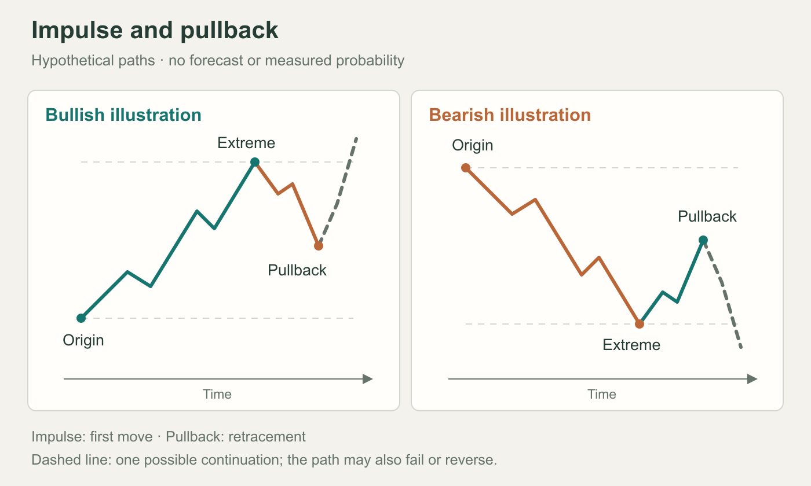
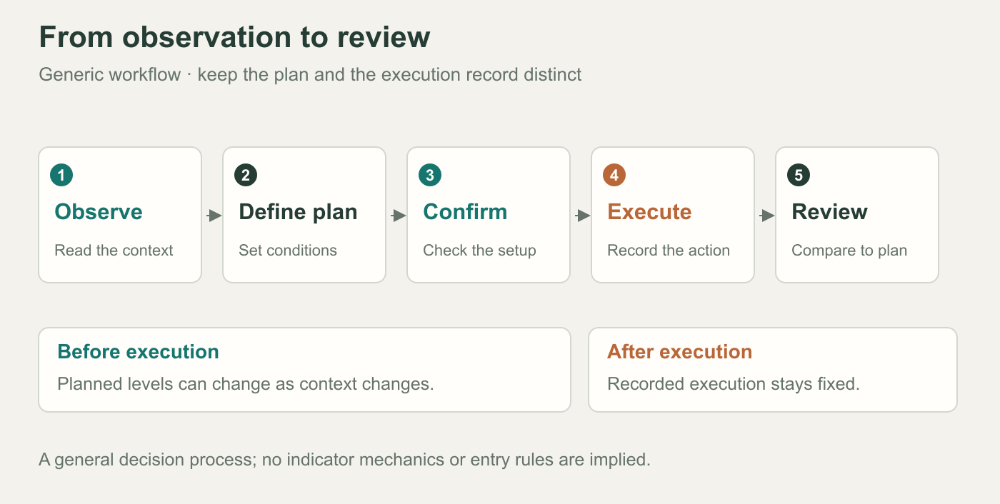
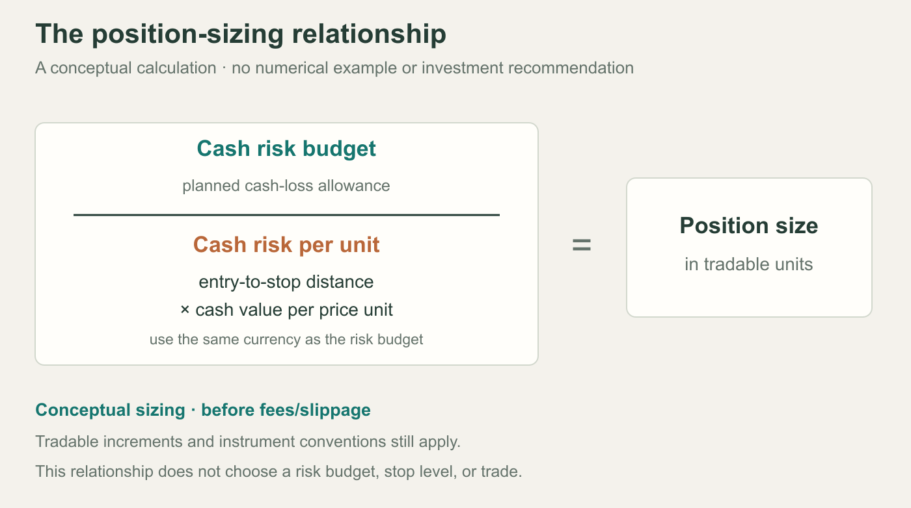

Using this companion
Choose a chapter from the contents, then follow its source link for the full text and screenshots. The illustrations below are original educational schematics. This companion does not reproduce the book or establish a trading edge.
Version notes
Version 2 adds presets, trade gating, revised alerts, and adaptive filters.
01 · Orientation
Introduces the indicator's purpose, limitations, markets, and suggested reading routes.
02 · Configuration
Covers installation, sizing, trend context, dashboard setup, and instrument presets.
03 · Chart elements
Separates trend context, pattern geometry, planned levels, and entry confirmation.
04 · Pattern structure
Explains impulse–pullback geometry, retracement zones, formation stages, scoring, and invalidation.
Illustration · Price structure


05 · Trade lifecycle
Follows setup assessment, pullback, reversal confirmation, execution, exits, and journaling.
Illustration · Decision sequence


06 · Configuration choices
Compares three approaches; presets override selected inputs. Optimization is in-sample.
07 · Risk controls
Distinguishes risk sizing, margin, leverage, portfolio exposure, and loss-streak rules.
Illustration · Position sizing


08 · Notifications
Separates preparatory armed alerts from confirmed-trade events and webhook messages.
09 · Statistics
Dashboard trades are virtual; preset results omit costs and count breakeven as wins.
10 · Process errors
Reviews confirmation, trend, overexposure, stop changes, emotional trading, and recordkeeping.
11 · Optional tools
Adds gap, structure, volume, and volatility tools; anchors lock at Entry touch.
12 · Troubleshooting
Clarifies signal, preset, access, and replay questions; concludes with checklists.